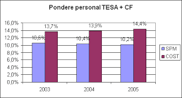
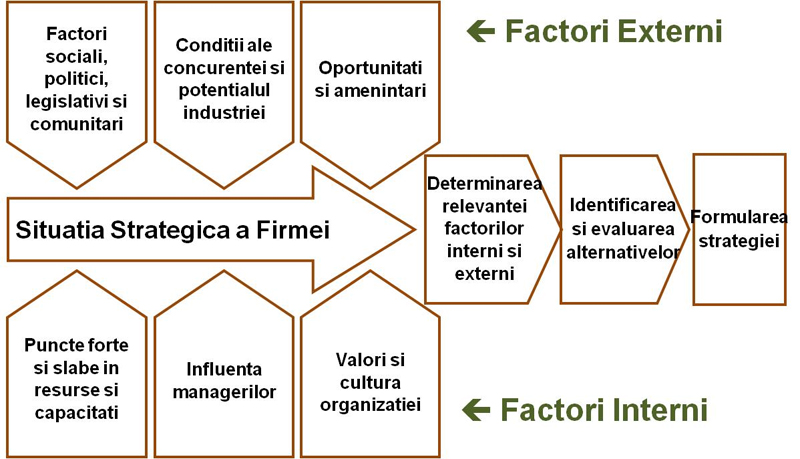
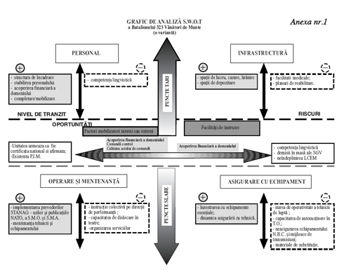
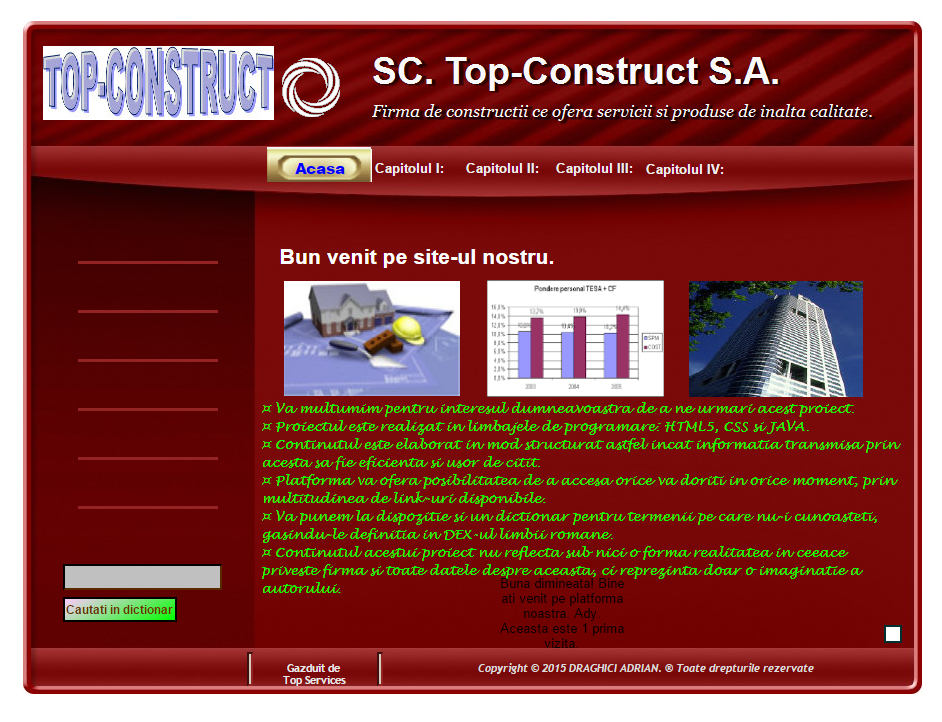
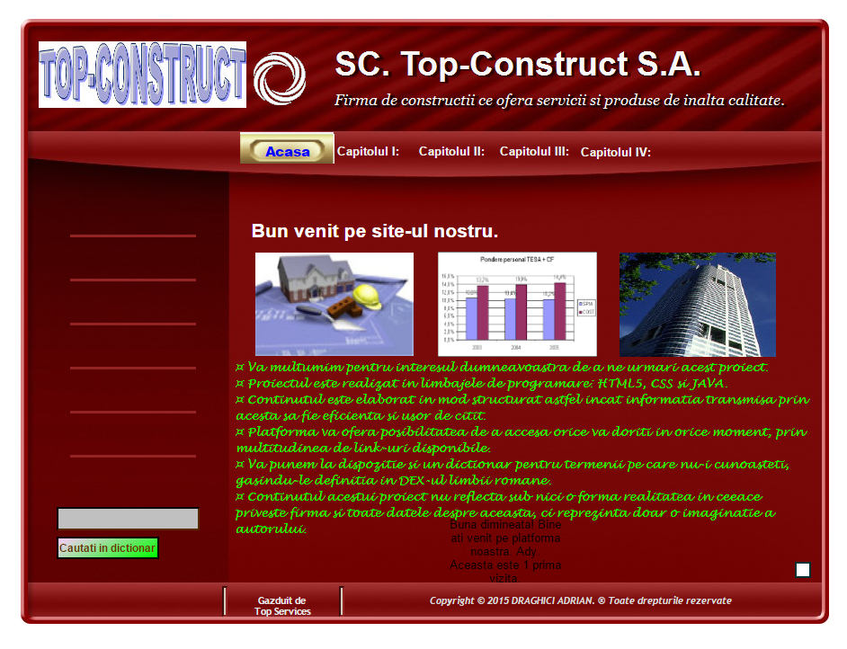

ANALIZĂ DIAGNOSTIC
STRATEGICĂ A SOCIETĂȚII
SC “ TOP-CONSTRUCT
” S.A.



In urmatorul proiect am sa va prezint Aplicarea analizei SWOT si a modelului Porter, adica Analiza diagnostic strategica, a Societatii SC. Top-Construct S.A. din care veti afla informatii cu privire la:
• Identificarea micromediului • Identificarea macromediului
• Identificarea și analiza detaliată a celor cinci forțe • Alternativ, pentru analiza SWOT,
• Identificarea și comentarea
- amenințărilor, - oportunităților, - puntelor tari și punctelor slabe
• Detalierea strategiilor pornind de la acestea
Despre Autor.
- elev in clasa a XII-a R1
- varsta 18 ani si 9 luni
- personalitate: caracterizat prin comportamet linistit, fire retrasa, serioasa si hotarata.
- pasiuni: programare, administrarea serverelor, managenet sisteme informatice, exploatarea si dezvoltarea securitatii informatice (hacking inofensiv) si calatoriile.
- perspective: absolvirea Facultatii de Informatica din cadrul Universitatii din Bucuresti, dezvoltarea firmei de gazduire existente a carei site este
(http://topservices.duoservers.com) prin deschiderea unui centru de date in Romania care va gazdui site-urile din Romania si o parte din cele din Europa,
restul fiind gazduite de cel din UK., dezvoltarea altor afaceri pentru a acoperi o buna parte din piata muncii.
Platforma Proiect

Acest proiect este realizat in HTML5

Acest proiect este realizat in HTML5
Draghici Adrian
Adresa
Strada Basarabilor nr 33 ,
Caminul Colegiului National Ion Minulescu
(2300113) Slatina Olt
Email: bussiness10developper@gmail.com